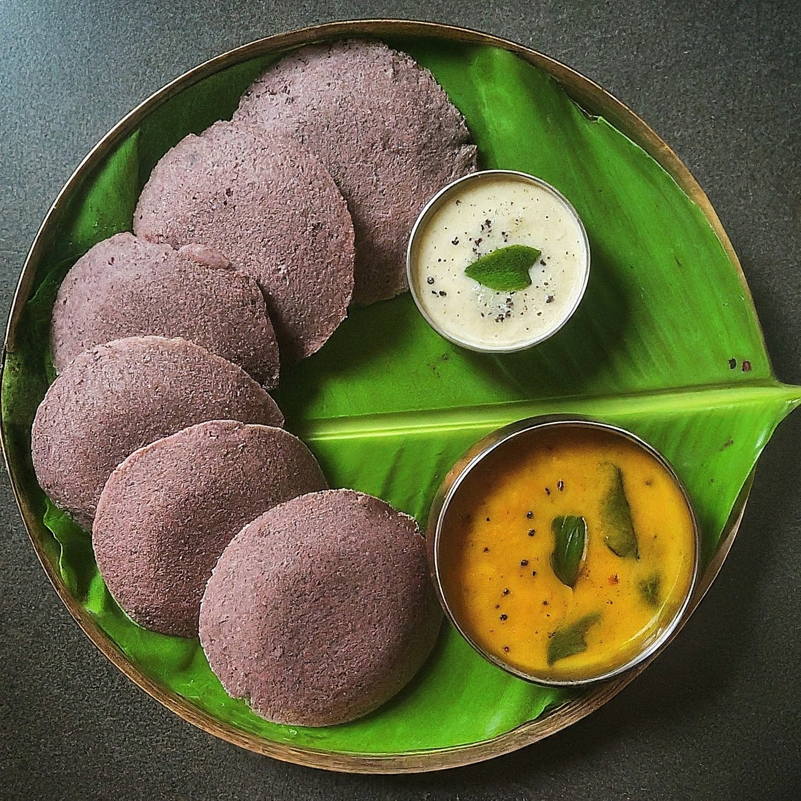
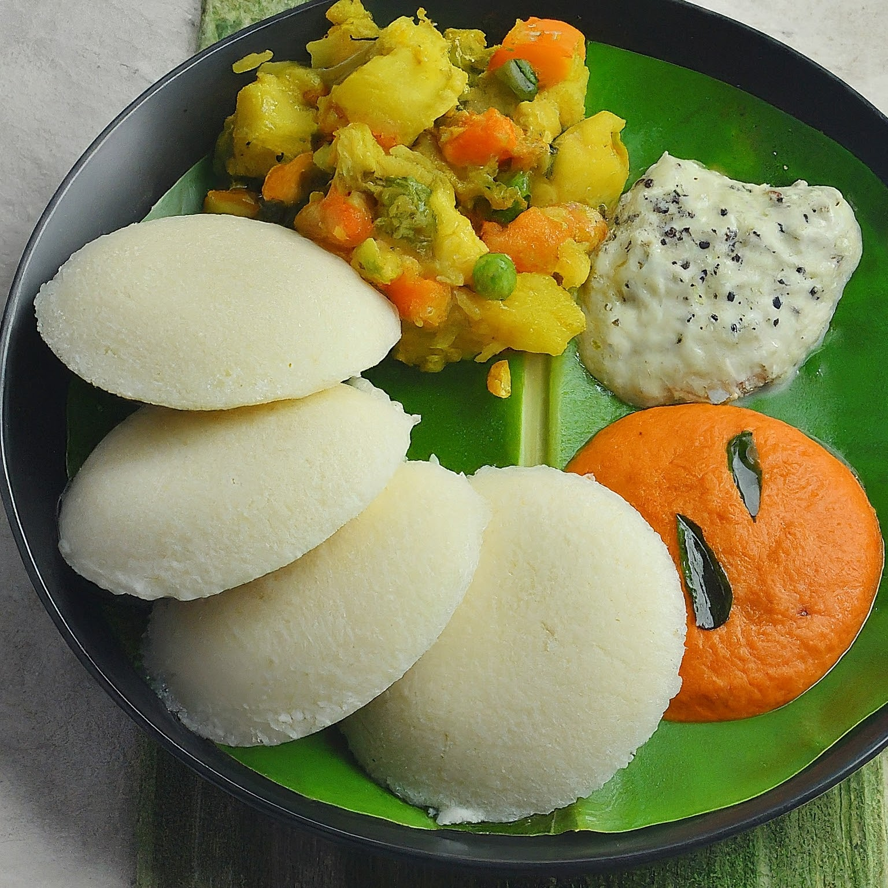
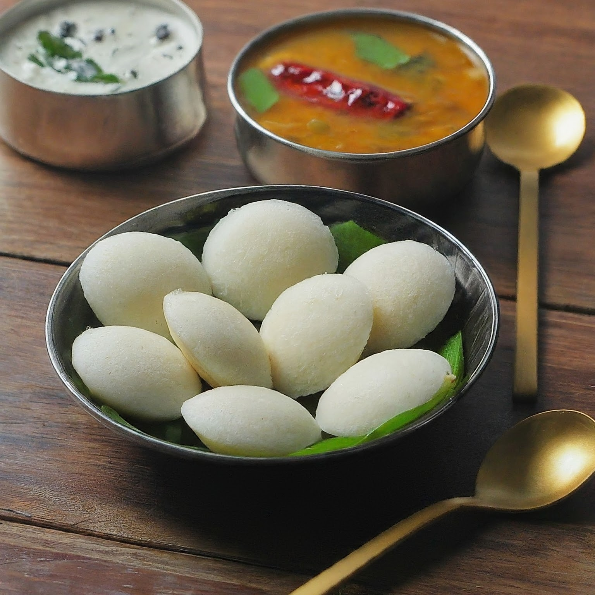
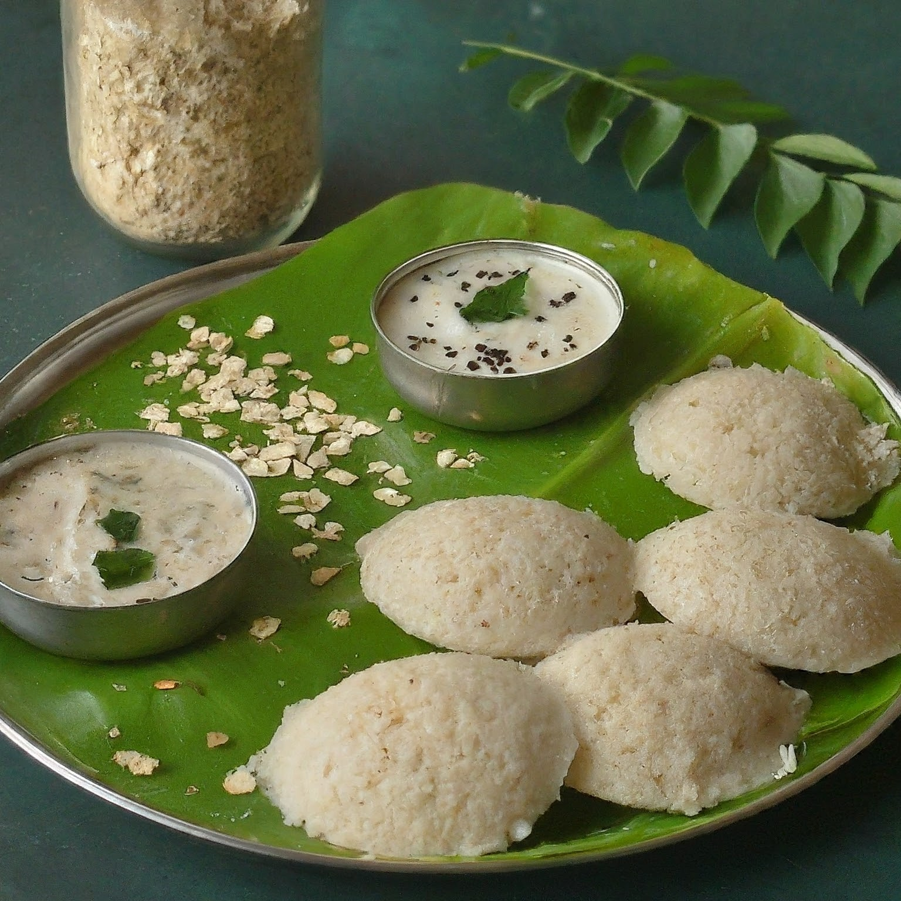

Classic Idli Recipes
Welcome to our collection of nutritious and delicious idli recipes! Idlis are a soft and fluffy steamed cake made from fermented rice and lentils, making them a perfect choice for a healthy breakfast or snack. At Battermami, we provide fresh, ready-to-use batter so you can make idlis effortlessly at home.
1. Classic Soft Idli

Our classic soft idlis are a South Indian staple, loved for their light, fluffy texture and mild flavor. Best enjoyed with coconut chutney and sambar.
Ingredients:
- 1 cup Battermami Idli batter
- Oil for greasing the idli molds
- Coconut chutney and sambar for serving
Instructions:
- Grease the idli molds with a little oil.
- Pour the Battermami idli batter into the molds, filling each one about three-quarters full.
- Steam the idlis in an idli steamer for 10-12 minutes, or until a toothpick inserted comes out clean.
- Remove from the molds and serve hot with chutney and sambar.
2. Ragi Idli
Ragi Idli is a healthy variation made from ragi (finger millet), known for its high calcium and fiber content. It's a great option for a nutritious, gluten-free breakfast.
Ingredients:
- 1 cup Ragi Batter (from Battermami)
- Oil for greasing the idli molds
- Chutney or sambar for serving
Instructions:
- Grease the idli molds and pour the ragi batter into each mold.
- Steam the idlis in an idli steamer for 12-15 minutes, or until cooked through.
- Let them cool slightly before removing from the molds. Serve with chutney or sambar.
3. Vegetable Idli
This colorful and nutritious idli is packed with finely chopped vegetables, making it a great way to add extra nutrition to your meals, especially for kids.
Ingredients:
- 1 cup Idli batter from Battermami
- 1/4 cup finely chopped carrots
- 1/4 cup finely chopped spinach
- 1/4 cup grated beetroot
- Oil for greasing the molds
Instructions:
- Mix the chopped vegetables into the idli batter.
- Grease the idli molds and pour the batter into each mold, filling about three-quarters full.
- Steam the idlis for 10-12 minutes or until fully cooked. Serve with chutney and sambar.
4. Mini Idli with Sambar
These bite-sized idlis are perfect for kids or as an appetizer. Serve them drenched in hot sambar for a comforting and filling meal.
Ingredients:
- 1 cup Battermami Idli batter
- Sambar for serving
- Oil for greasing the mini idli molds
Instructions:
- Grease the mini idli molds and pour a small amount of batter into each mold.
- Steam for 8-10 minutes, or until cooked.
- Serve the mini idlis soaked in hot sambar for a delicious and hearty dish.
5. Instant Oats Idli
If you're in a hurry and looking for a healthy option, Instant Oats Idlis are the way to go. They are light, quick to make, and packed with fiber.
Ingredients:
- 1 cup oats, roasted and powdered
- 1/2 cup rava (semolina)
- 1/2 cup curd
- 1/2 tsp baking soda
- 1/4 cup grated carrots
- Oil for greasing molds
- Water as required
Instructions:
- Mix powdered oats, rava, curd, baking soda, grated carrots, and salt in a bowl. Add water as needed to form a batter.
- Grease the idli molds and pour the batter into the molds.
- Steam for 10-12 minutes or until the idlis are soft and cooked through.
- Serve hot with chutney or sambar.